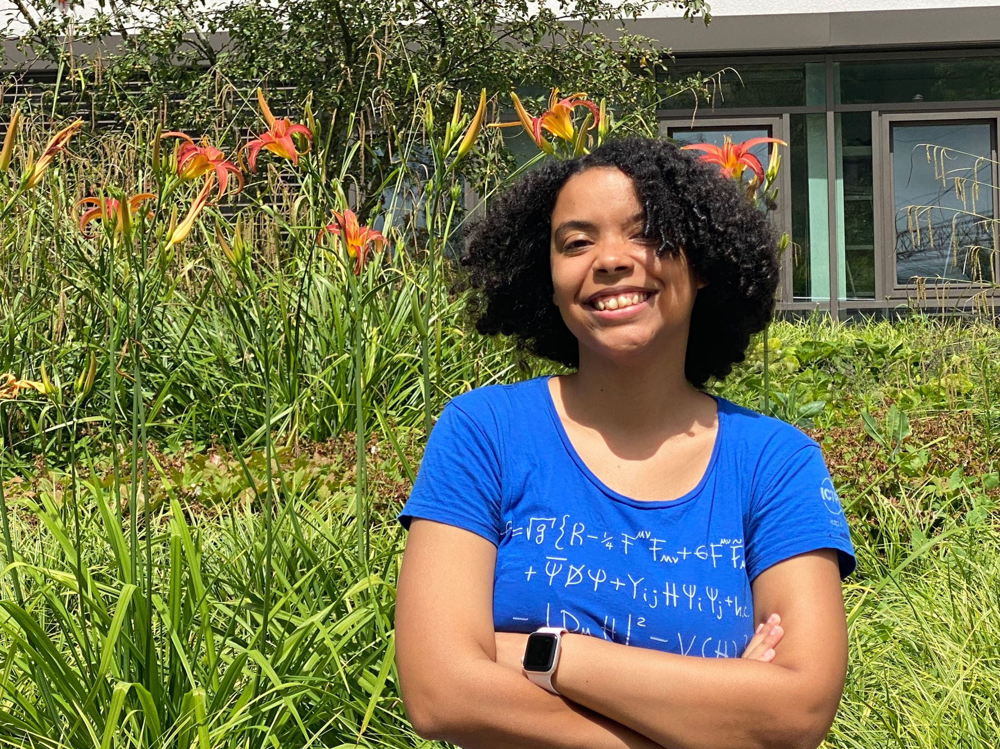

About me
I am currently pursuing a Master's degree in Astrophysics and Space Science (MASS) through the Erasmus Mundus program. This program is delivered by a consortium of four universities. Thus far, I have attended the University of Rome "Tor Vergata" and the University of Belgrade as part of my studies. Originally from the Dominican Republic, I obtained my bachelor's degree in Physics from the Autonomous University of Santo Domingo. You can find more about me in my CV.